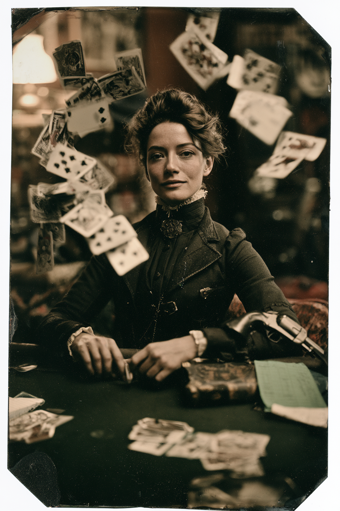

Archetyp: HUCKSTER (Taschenspieler)
Einsteigerfigur: ein einziger Ablauf, jedes Mal derselbe — Benny, Glücksspiel, fünf Karten, bestes Blatt.
Sie spielt nicht mit dem Teufel. Sie hat ihn unter Vertrag, und sie hat noch nie eine Rate versäumt.
| Agility | d6 | 1 |
| Smarts | d8 | 2 |
| Spirit | d8 | 2 |
| Strength | d4 | 0 |
| Vigor | d4 | 0 |
| Skill | Attr. | Die | Pts. |
|---|---|---|---|
| Gambling | Sma | d10 | 5 |
| Persuasion | Spi | d8 | 2 |
| Spellcasting | Sma | d6 | 2 |
| Shooting | Agi | d6 | 2 |
| Notice | Sma | d6 | 1 |
| Weapon | Range | Damage | AP | RoF | Wt. | Cost |
|---|---|---|---|---|---|---|
| Derringer (.41) | 3/6/12 | 2W4 | – | 1 | 0,5 | $5 |
| 2 Schuss, –2 auf Wahrnehmung, wenn versteckt | ||||||
| Power | PP | Range | Dur. | Effect |
|---|---|---|---|---|
| Eigenschaft erhöhen/senken | 2 | Verstand | 5 | Eigenschaft eines Verbündeten einen Würfeltyp höher, zwei bei einer Steigerung |
| Schmuckstücke | 3 | Verstand | 5 | erschafft einen profanen Gegenstand unter einem halben Kilo; bei einer Steigerung Minuten statt Runden |
| Verwirrung | 1 | Verstand | bis Zugende des Opfers | Ziel wird Abgelenkt und Verwundbar, wenn ihm eine Verstandsprobe misslingt; –2 bei einer Steigerung |
Pakt: Benny · Glücksspiel (Neuwurf aus Falsch Spielen) · 5 Karten, +1/+2 · bestes Blatt
Keine Bennies für Machtpunkte, keine Kostensenkung — dafür der Pakt
Hintergrund. Cordelia wuchs auf einem Mississippi-Dampfer auf, der Belle of Cairo. Unten gab sie Baumwollhändlern Faro, oben bediente ihre Großmutter den hohen Tisch. Großmutter Vance verwahrte außerdem einen Hoyle von 1769 unter dem doppelten Boden ihres Koffers, und als das Herz der Alten ’81 aufgab, kam das Buch an Cordelia — zusammen mit einem Hauptbuch: jedes Geschäft, das Großmutter je mit einem Wesen namens Mr. Pettibone geschlossen hatte, liniert, datiert und von zwei Händen abgezeichnet. Cordelia las es von vorn bis hinten, verstand genau, was sie erbte, und trat die Stelle trotzdem an, denn ein Partner, der nie stirbt, ist mehr wert als einer, der stirbt. Dann erwischte ein Baumwollkönig aus Memphis namens Aubrey Slade sie dabei, wie sie Karten aus leerer Luft zog, nannte sie vor achtzig Leuten eine Hexe — und lag am nächsten Morgen mit dem Gesicht im Flachwasser, ein Full House in der Faust. Ein Blatt, das Cordelia nach eigener Aussage nie gespielt hat.
Build. Geschicklichkeit W6, Verstand W8, Geist W8, Stärke W4, Konstitution W4 · Parade 2, Robustheit 4 Glücksspiel W10, Überreden W8, Zaubern W6, Schießen W6, Bemerken W6 Talente: Arcane Background (Huckster) (Arkaner Hintergrund (Taschenspieler)), Card Sharp (Falsch Spielen), Charismatic Handicaps: Vow (Schwur) — Major: sie hält den Buchstaben jedes Vertrags, den sie unterschreibt, auch der mit eigenem Blut geschriebenen. Sie wird ein Geschäft biegen, überteuern und sehr langsam laut vorlesen auf der Suche nach der Naht. Brechen wird sie es nicht. · Greedy — Minor · Wanted (Gesucht) — Minor: Haftbefehl in Tennessee, Mord an Aubrey Slade Mächte (10 MP): Eigenschaft erhöhen/senken, Schmuckstücke, Verwirrung — Trappings: ein aufgefächertes Blatt Karten, das nicht da ist, gegeben aus einem Stapel, den sie nicht hält. Ausrüstung: Großmutters Hoyle von 1769 und das grüngebundene Hauptbuch, Derringer .41 im Ärmelhalfter, guter Anzug, drei versiegelte Kartenspiele, Reitpferd, rund 40 Dollar Spieleinsatz.
Die Nische. Sie besitzt überhaupt keine Angriffsmacht. Immer wenn die Posse etwas verbrannt, geblendet, abgeschirmt oder beschossen braucht, zahlt sie einen Benny und mietet es bei Mr. Pettibone — der Teufelspakt erlaubt das Wirken von Mächten, die sie nie gelernt hat, und von Mächten über ihrem Rang. Glücksspiel W10 mit Neuwurf macht sie zur verlässlichsten Spielerin am Tisch, und die Überschuss-Machtpunkte eines fetten Blatts stützen ihr bloßes W6 im Zaubern. Eine Frau mit kleiner Börse und gewaltigem Kredit.
Am Tisch. Der ganze Charakter in fünf Schritten. Cordelia hat genau einen Ablauf, und sie wiederholt ihn jede Sitzung: 1. Benny abgeben. 2. Ansagen, welche Macht sie will — auch eine, die sie nie gelernt hat, auch eine über ihrem Rang. 3. Glücksspiel W10 würfeln; misslingt es, Falsch Spielen neu würfeln. 4. Fünf Karten ziehen, bei Erfolg eine sechste, bei einer Steigerung eine siebte. 5. Bestes Pokerblatt bilden, in der Tabelle nachschlagen, Machtpunkte kassieren. Ein Joker ist eine Wildcard und gibt den Benny zurück. Nur bei einem Patzer auf Schritt 3 würfelt der Marshal hinterher auf der Rückschlagstabelle (S. 88) — das ist die einzige Stelle, an der es wirklich weh tun kann.
Aufhänger. Mr. Pettibone ist kein Monster in der Wand, sondern eine Gegenpartei, und er liest seit vierzig Jahren das Kleingedruckte. Slades Tod war ein Test, ob Cordelia ihr Gelübde auch dann hält, wenn das Verbrechen seines ist. Sie hielt es. Seither eskaliert er: kleine Gefälligkeiten, die er ungebeten erbringt und anschließend in Rechnung stellt. Er arbeitet auf eine einzige Neuverhandlung hin, und die Gegenleistung, die er will, ist nicht ihre Seele. Es ist ihre Unterschrift als Bürgin unter den Vertrag eines anderen. Vermutlich den eines Posse-Mitglieds.
Mr. Pettibone. Marshal-Material — dieser Abschnitt steht bewusst nicht im Dossier.
Was er ist. Ein Manitou, also ein böser Geist aus den Ewigen Jagdgründen — dieselbe Sorte Wesen, die eine Seele in ihren Leichnam zurückzerrt und einen Gepeinigten daraus macht (Grundbuch S. 57). Seine Artgenossen treten Türen ein. Pettibone hat vor langer Zeit ausgerechnet, dass sich mit Buchführung mehr erreichen lässt, und ist seither, soweit man das von einem Dämon sagen kann, im Handel tätig. Mit den Frauen der Familie Vance macht er seit drei Generationen Geschäfte.
Wie er auftritt. Nie als Erscheinung. Er wird konsultiert, nicht beschworen. Ein Mann Mitte fünfzig im Anzug von vor zwanzig Jahren, Zelluloidmanschetten, ein Bleistift hinterm Ohr, den er nie benutzt, weil er die Zahl schon weiß. Er nimmt in Räumen den Hut ab. Er sitzt auf dem vierten Stuhl eines Tisches für drei. Er steht im Fensterglas, wenn draußen Nacht ist, und im Rasierspiegel, und einmal in der Politur eines Sargdeckels. Er sagt „Frau Vance“ und nie „Cordelia“. Wenn er zuhört, hört er wirklich zu — das ist das Unangenehmste an ihm.
Die vier Regeln, nach denen man ihn spielt. Er lügt nicht. Nicht einmal ausweichend — aber er beantwortet exakt die Frage, die gestellt wurde, und keine, die danebenlag. Er betrügt nicht. Er verliert Blätter, ohne zu murren, und zahlt aus, bevor man ihn erinnert. Er tut nichts umsonst. Jede Gefälligkeit, um die niemand gebeten hat, taucht später als Posten auf, korrekt datiert. Er drängt nie. Er macht ein Angebot und wartet. Bei Großmutter Vance hat er einmal elf Jahre gewartet.
Was er will — in drei Stufen. Erstens, dass überhaupt eine Schuld besteht. Die Kutsche, die noch am Bahnsteig steht, obwohl sie längst abgefahren sein müsste. Das Telegramm, das der Sheriff vergessen hat. Die Wunde, die über Nacht zugeht. Nichts davon hat Cordelia bestellt, und alles davon steht sechs Wochen später im Hauptbuch, ordentlich beziffert. Zweitens, ihre Unterschrift als Bürgin. Nicht ihre Seele — die hat er nie verlangt und wird er nie verlangen, weil er dafür lügen müsste. Er will, dass sie für den Vertrag eines anderen geradesteht, und der andere wird jemand aus der Posse sein. Der Grund ist ihr Schwur: Cordelia hält den Buchstaben jedes Vertrags, den sie unterschreibt. Wer sie zur Bürgin macht, bekommt keine Schuldnerin, sondern eine Gerichtsvollzieherin, die ihr Wort nie bricht — und die den Schuldner selbst zur Zahlung antreiben wird, weil sie nicht anders kann.
Drittens — und das ist der Punkt: ein Platz in der Schlange. Wenn ein Wildcard stirbt und sein Gehirn intakt bleibt, wird je Rang eine Aktionskarte gegeben, und ein Joker bedeutet, dass ein Manitou mit ihm aus dem Grab zurückkommt (Grundbuch S. 57). Vierzig Jahre lang hat Pettibone zugesehen, wie seinesgleichen sich um Körper würfelt. Er hält das für schlechte Geschäftsführung. Er will dieselbe Sache in Schriftform: dass im Voraus benannt ist, wer kommt, wenn ein bestimmter Mensch stirbt. Eine Bürgschaft macht ihn zum Gläubiger mit vorrangigem Anspruch, und ein Gläubiger muss keinen Joker ziehen. Er kauft keine Seele. Er kauft die erste Position in der Warteschlange an einem Sterbebett — und wenn der Schuldner vorher fällt, rückt die Bürgin an dessen Stelle, und das einzige Aktivum, das Cordelia in dieser Größenordnung besitzt, ist ihre eigene Beherrschung.
Was aus ihm wird, wenn er gewinnt. Solange er draußen ist, hat Pettibone keine Hände — er kann reden, Karten geben und Rechnungen schreiben, mehr nicht. Genau das macht ihn höflich. Bekommt er, was er will, sitzt er im Leichnam: Der Tote steht als Gepeinigter wieder auf, und der Körper gehört ab da zwei Parteien — dem Spieler und dem Marshal. Die Beherrschung (Willenskraft-Würfeltyp im Moment des Todes) ist das Tauziehen dazwischen, und Pettibones erklärtes Ziel ist, sie auf null zu bringen. Wie das aussieht, steht schon im Ordner: Zeke Cornish (03-2) fährt Mr. Bright spazieren, der seine Beherrschungs-Ergebnisse ansparrt. Genau das will Pettibone werden.
Daraus folgen drei Dinge, die ihn erst gefährlich machen. Er kann es nur einmal — ein Manitou, ein Körper. Seine vierzig Jahre Geduld sind kein Zaudern, sondern Auswahl. Er müsste dafür sein Geschäft aufgeben: draußen verdient er an den Vances, drinnen ist er Insasse. Der Körper muss also mehr wert sein als vierzig Jahre Handel, und die Frage warum ist die beste Schraube, die der Marshal an dieser Figur hat. Und Cordelia verliert dabei den Guten: In dem Moment, in dem er einsteigt, hat sie irgendeinen anderen Manitou am Kartentisch — einen, der lügt, betrügt und drängelt. Das merkt sie erst hinterher.
Eine freie Stelle. Prudence Mabry (03-1) ist Gepeinigte mit Beherrschung 6 und einem Major-Geheimnis, aber ihr Manitou hat keinen Namen. Wer Pettibone dort einsetzt, macht aus Cordelias und Prus Geschichte eine einzige: Die Bürgschaft, um die er wirbt, hätte dann ein Gesicht, das bereits mit am Tisch sitzt — und Pru wüsste seit ihrem Tod, was Cordelia noch nicht glaubt.
Drei Stufen für den Tisch. Eins: eine ungebetene Gefälligkeit, die offensichtlich Leben rettet, und sechs Wochen später die Rechnung. Zwei: ein Angebot an ein anderes Posse-Mitglied, das wirklich fair ist — er betrügt nicht, das ist der Haken —, mit einer Bürgschaftszeile am Fuß, in die nur ein Name fehlt. Drei: der Schuldner stirbt, wie Schuldner in diesem Beruf sterben, und Pettibone erscheint pünktlich, höflich, mit der Kopie.
Das Verräterische. Er schreibt Zahlen nie mit Ziffern, immer ausgeschrieben. In Großmutter Vances Hauptbuch steht eine Seite, auf der es umgekehrt ist — und auf derselben Seite steht seine eigene Unterschrift unter einer Vertragsstrafe. Die Alte hat ihn ein einziges Mal geschlagen, und sie hat es nicht mit Karten getan, sondern mit dem Kleingedruckten. Cordelia hat diese Seite hundertmal gelesen und weiß bis heute nicht, worum es ging. Das ist die Gewinnbedingung am Tisch: ein Vertrag, den er unterschreibt, bindet auch ihn.
Die Machtliste. Im Pakt darf ein Taschenspieler jede Macht dieser Liste wirken — auch die, die er nie gelernt hat, und die über seinem Rang (Grundbuch S. 67). Cordelia beherrscht drei davon selbst; die folgenden vierzig stehen ihr über Mr. Pettibone offen. Sortiert nach Machtpunkten, weil das die Frage ist, die nach dem Blatt auf dem Tisch liegt. Rang: A Anfänger · F Fortgeschritten · V Veteran · H Heroisch. 1 Machtpunkt - Geschoss · A — 2W6 Schaden, 3W6 bei Steigerung; Reichweite Verstand ×2, keine Entfernungsabzüge - Verwirrung · A — Ziel wird Abgelenkt und Verwundbar, wenn ihm eine Verstandsprobe misslingt - Arkaner Schutz · A — feindliche Mächte gegen das Ziel –2, –4 bei einer Steigerung - Schutz · A — +2 Panzerung, +4 bei einer Steigerung - Empathie · A — vergleichender Wurf gegen Willenskraft; Bonus auf soziale Proben oder erkennen, ob gelogen wird - Elementarmanipulation · A — kleine Effekte mit Erde, Feuer, Luft oder Wasser - Geräusch/Stille · A — ahmt ein Geräusch oder eine Stimme nach, oder macht einen Bereich stumm - Sprachen sprechen · A — sprechen, lesen und schreiben in einer fremden Sprache - Aufheben · F — beendet eine laufende Macht 2 Machtpunkte - Strahl · A — Kegelschablone, Schaden an allem darin - Chaos · A — schleudert alle im Wirkungsgebiet umher - Blenden · A — verschwommene Sicht, bei einer Steigerung fast vollständige Blindheit - Furcht · A — überwältigendes Grauen im Wirkungsgebiet - Betäuben · A — das Ziel wird Betäubt - Verstricken · A — hält ein Ziel fest, Härte 5 - Eigenschaft erhöhen/senken · A — eine Eigenschaft einen Würfeltyp höher oder niedriger, zwei bei einer Steigerung - Abstumpfen · A — Verbündete in Reichweite ignorieren 1 Punkt Wundabzug, 2 bei einer Steigerung - Arkanes entdecken/verbergen · A — sieht alles Übernatürliche in Sichtweite, oder verbirgt es - Licht/Dunkelheit · A — Licht oder Dunkelheit in einer großen Flächenschablone - Schutz vor Naturgewalten · A — gegen Hitze, Kälte, Rauch, Wasser und dergleichen - Wandkrabbler · A — läuft an Wänden hoch und kopfüber an Decken - Verbündeten beschwören · A, 2+ — beschwört einen magischen Diener; mehr Punkte, mehr Diener - Barriere · F — unbewegliche Wand, 10 Meter lang, 2 Meter hoch - Schlummer · F — versetzt Opfer in tiefen Schlaf, ohne sie zu verletzen - Teleportation · F — verschwindet und erscheint 24 Meter weiter wieder, doppelt bei einer Steigerung - Trägheit/Beschleunigung · F — verringert oder erhöht Geschwindigkeit und Koordination des Ziels - Verkleiden · F — nimmt das Aussehen einer anderen Person derselben Größe an - Fernsicht · F — sieht über große Entfernung im Detail - Objekt auslesen · F — liest die Vergangenheit eines leblosen Gegenstands 3 Machtpunkte - Abwehren · A — Angreifer –2, –4 bei einer Steigerung - Illusion · A — erschafft ein Trugbild aus dem Nichts - Schmuckstücke · A — erschafft einen profanen Gegenstand unter einem halben Kilo (auch einen Derringer) - Marionette · V — übernimmt die Handlungen des Ziels 4 Machtpunkte - Schadensfeld · F — Aura, die jeden verletzt, der in den Nahkampf kommt - Munitionszauber · F — für Cordelia gesperrt: die Macht verlangt ausdrücklich das Talent Runenschießen (Grundbuch S. 69), das nur Runenschützen haben 5 Machtpunkte - Telekinese · F — bewegt Objekte und Kreaturen mit dem Willen - Unsichtbarkeit · F — der Empfänger wird bis auf einen Schimmer durchsichtig - Unberührbarkeit · H — der Empfänger wird körperlos - Zwiesprache · H — befragt andersweltliche Wesen nach Auskunft Sonderfall - Tierfreund · A, Kosten speziell — spricht mit Tieren und lenkt ihr Handeln
Zwei Namen stehen im Grundbuch anders in der Auswahlliste (S. 66) als im Regelteil: „Blind“ heißt dort, wo die Regel steht, Blenden (SWADE S. 156), und „Furchterregend“ heißt Furcht (SWADE S. 158). Wer unter dem Listennamen nachschlägt, findet nichts.
Notizen. So sehen die sechs Zeilen des Bogens am Tisch aus.
Warum es Spaß macht. Du spielst Gesicht und Artillerie der Gruppe aus demselben Kartenspiel, und jeder Kampf ist eine echte Pokerhand, bei der sich der ganze Tisch vorbeugt. Der Horror kommt seitlich herein: dein Teufel ist ausnehmend höflich, penibel fair und macht dich langsam zu seinem Werkzeug, indem er dich nie betrügt.
Regelgrundlage: Regelnotizen · Archetyp-Notizen